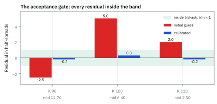
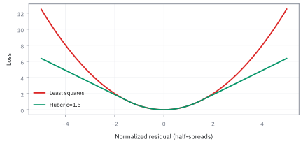
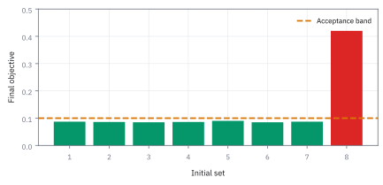
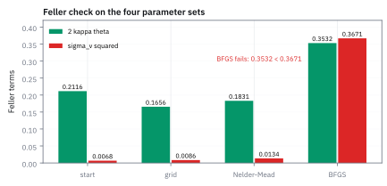

21.4 The Production Calibration Recipe
calibration ที่ใช้งานได้ทุกเช้าคือลำดับขั้นที่ตกลงกันไว้ก่อนเห็นผล: คัดข้อมูล วัดความพลาดเทียบ bid–ask กันราคาผิดไม่ให้ลากผล ยึดกับค่าของเมื่อวาน ลองหลายจุดเริ่ม ตรวจ parameter แล้วบันทึกทุกอย่างให้รันซ้ำได้
ทีม quant รายงานผล calibrate Heston ห้าตัวกับ call ของ Apple (หุ้นราว \$190 strike \$170 ถึง \$210 อายุ 25 ถึง 697 วัน) จากจุดเริ่มเดียวกันที่มี RMSE \$0.8659 สามวิธีได้ดังนี้: grid search \$0.3670, Nelder–Mead \$0.2790 ($\kappa=1.95$, vol-of-vol $\xi=0.116$) และ BFGS \$0.2661 ($\kappa=3.69$, $\xi=0.606$) หัวหน้าโต๊ะบอกให้ใช้ชุดของ BFGS เพราะความคลาดเคลื่อนต่ำที่สุด ควรทำตามไหม?
ลองตอบก่อนเปิดเฉลย
ยังไม่ควร BFGS ชนะ Nelder–Mead แค่ \$0.0129 (4.6%) แต่ $\kappa$ ต่างกัน 1.89 เท่าและ $\xi$ ต่างกัน 5.2 เท่า นี่คือร่องแบนที่ข้อมูลแยกสองชุดไม่ออก แต่ราคาสัญญาอื่นและ hedge ที่คำนวณจากสองชุดจะต่างกันมาก และชุดของ BFGS ไม่ผ่าน เงื่อนไข Feller: $2\kappa\theta=0.3532$ น้อยกว่า $\xi^2=0.3671$ variance ในแบบจำลองจึงแตะศูนย์ได้ การเลือกต้องผ่านประตูที่ตั้งไว้ก่อนเห็นผล ไม่ใช่เลือกจาก RMSE ตัวเดียว หน้านี้สร้างประตูเหล่านั้นทีละด่าน
ภาพรวมก่อนลงสูตร
ตลาดตั้งราคา option ที่ซื้อขายคล่องด้วยอุปสงค์และอุปทาน ไม่ได้ตั้งด้วยแบบจำลอง แต่โต๊ะยังต้องมีแบบจำลองไว้ตั้งราคาสัญญาที่ซื้อขายน้อยและไว้คำนวณ Greeks เพื่อ hedge แบบจำลองจึงต้องถูกปรับให้ตรงกับราคาที่ซื้อขายคล่องทุกเช้า และไม่มีแบบจำลองใดตรงทั้งผืนพอดี การปรับนี้ต้องเลือกห้าอย่าง: ข้อมูลชุดไหน แบบจำลองไหน วัดความพลาดอย่างไร เริ่มจากจุดไหน และใช้ optimizer ตัวไหน ทั้งห้าข้อต้องเลือกไว้ก่อนรัน ไม่ใช่เลือกหลังเห็นผล
กริดของ finite difference ตั้งราคาสัญญาที่ใช้สิทธิ์ก่อนได้ optimizer หลายตัวแปร หา parameter อย่างมีเบรก และ เครื่องตั้งราคาแบบ FFT เร็วพอให้ optimizer เรียกซ้ำ หน้านี้ประกอบทุกชิ้นเป็นงานที่รันก่อนตลาดเปิดแล้วคนอื่นตรวจรับได้ รูปด้านล่างคือเส้นทางของข้อมูลหนึ่งเช้า: ผ่านประตูคัดข้อมูล ผ่านการ fit ผ่านประตูตรวจผล แล้วแยกเป็นปล่อยใช้หรือถอยไปใช้ชุดของเมื่อวาน
ตัวอย่างหลักคือเส้น variance ของ Heston ที่ fit กับ variance swap เพราะคำนวณตามได้ทุกตัวเลข ส่วน snapshot ของ option สาม strike และผลจริงของ Heston ห้าตัวกับ Apple ใช้ในด่านที่ต้องการ
รูป — หนึ่งเช้าของ calibration: สองประตู หนึ่งทางแยก และวงที่วนกลับ
ศัพท์ที่ใช้ในหัวข้อนี้
- Snapshot
- ชุดราคาที่แช่แข็งไว้ ณ เวลาเดียว (ในหน้านี้ 09:00:00) ใช้ให้ทุกขั้นถัดไปเห็นข้อมูลชุดเดียวกัน และให้คนอื่นรันซ้ำได้ มีไว้เพราะราคาที่เปลี่ยนระหว่างการคำนวณทำให้ผลตรวจย้อนไม่ได้
- Stale quote
- ราคาที่ไม่ได้อัปเดตนานเกินเกณฑ์เทียบกับเวลาของ snapshot ใช้คัดออกเพราะมันบอกตลาดของเมื่อก่อน ไม่ใช่ของตอนนี้
- Crossed quote
- ราคาที่ bid ไม่ต่ำกว่า ask ซึ่งซื้อขายจริงไม่ได้ ใช้เป็นสัญญาณว่าข้อมูลผิด ต้องกักไว้ตรวจ ไม่ใช่เอาค่าเฉลี่ยไปใช้
- Huber loss
- ความพลาดที่นับแบบกำลังสองเมื่อ residual เล็ก และนับแบบเส้นตรงเมื่อเกินเกณฑ์ $c$ ใช้ลดแรงดึงของ quote ผิดตัวเดียวที่หลุดการคัดมาได้ โดยยังเห็นมันเด่นในรายงาน
- Prior (MAP)
- การลงโทษเมื่อ parameter ออกห่างจากค่าของเมื่อวาน ได้จากการรวมข้อมูลวันนี้กับความเชื่อเดิมแบบ Bayes ใช้ลดการกระโดดของ parameter ที่ข้อมูลแยกไม่ออก
- Acceptance gate
- เกณฑ์ผ่านที่เขียนไว้ก่อนรัน เช่น residual ทุกตัวไม่เกิน 1 หรือผ่าน Feller ใช้ตัดสินว่าจะใช้ผลหรือไม่ โดยไม่ต้องใช้ความรู้สึกหลังเห็นผล
- Manifest
- บันทึกของการรันหนึ่งครั้ง: ข้อมูลที่ใช้ ค่าที่ตั้ง รุ่นของโค้ด ผลของทุกประตู และรหัสที่ระบุชุดนี้ ใช้รันซ้ำเมื่อมีข้อสงสัย และใช้ถอยกลับไปชุดล่าสุดที่ผ่าน
สัญลักษณ์และหน่วย
| สัญลักษณ์ | ความหมาย | หน่วย |
|---|---|---|
| $b_i,\ a_i$ | bid และ ask ของ quote ตัวที่ $i$ | ดอลลาร์ หรือจุดความผันผวน |
| $m_i,\ h_i$ | ราคากลาง $(b_i+a_i)/2$ และครึ่งส่วนต่าง $(a_i-b_i)/2$ | ตามหน่วยของ quote |
| $r_i,\ L$ | residual ในหน่วยครึ่งส่วนต่าง และ objective | ไม่มีหน่วย |
| $\nu_i$ | vega: ราคาเปลี่ยนเท่าไรต่อความผันผวนหนึ่งจุด | ดอลลาร์ต่อจุด |
| $c$ | เกณฑ์ของ Huber loss | ครึ่งส่วนต่าง |
| $x,\ x_{\rm prior},\ \gamma$ | parameter $(100v_0,\ 100\theta,\ \kappa)$ ของเส้น variance ค่าของเมื่อวาน และน้ำหนักของ prior | ไม่มีหน่วย ยกเว้น $\kappa$ ต่อปี |
| $\kappa,\ \theta,\ \xi,\ \rho,\ v_0$ | parameter ของ Heston โดย $\xi$ คือ vol-of-vol | ต่อปี ยกเว้น $\rho$ ไม่มีหน่วย |
| RMSE | รากของค่าเฉลี่ยของ (ราคาจากแบบจำลอง − ราคาตลาด)² | ดอลลาร์ |
ขั้นที่ 1 — แช่แข็ง snapshot แล้วคัดด้วยกฎที่เขียนไว้ก่อน
โจทย์ให้อะไรมาบ้าง: snapshot ของ variance swap เวลา 09:00:00 (ตัวเลขสมมติ ห้าตัวคือ quote ที่ใช้ในหน้า optimizer) พร้อมเวลาอัปเดตล่าสุด กฎสามข้อเขียนไว้ก่อนเปิดดูข้อมูล: bid ต้องต่ำกว่า ask, quote ต้องอัปเดตภายใน 5 นาที และ total variance $T\,m_i$ ต้องเพิ่มขึ้นตามอายุ
| อายุ (ปี) | bid (%) | ask (%) | อัปเดตล่าสุด | ผล |
|---|---|---|---|---|
| 0.25 | 27.85 | 28.35 | 08:59:58 | ผ่าน |
| 0.5 | 26.60 | 27.10 | 08:59:57 | ผ่าน |
| 0.75 | 25.90 | 25.40 | 08:59:59 | crossed: ตัดออก |
| 1 | 24.45 | 25.05 | 08:59:59 | ผ่าน |
| 1.5 | 24.70 | 25.30 | 08:59:58 | ผ่าน |
| 2 | 22.55 | 23.35 | 08:59:56 | ผ่าน |
| 3 | 21.40 | 22.40 | 08:59:55 | ผ่าน |
| 5 | 20.80 | 21.80 | 08:21:10 | ค้าง 38.8 นาที: ตัดออก |
คำตอบ: ตัด 0.75 ปี (bid 25.90 สูงกว่า ask 25.40) และ 5 ปี (อัปเดตก่อน snapshot 2,330 วินาที) เหลือหกตัวที่ total variance เพิ่มขึ้นทุกช่วง ถ้าตัวใดทำให้ total variance ลดลง การซื้อ variance swap อายุยาวกับขายอายุสั้นจะได้เงินฟรี (calendar arbitrage) บรรทัดล่างคือกรณีพิมพ์ผิดที่ 2 ปีเป็น 32.55 / 33.35 ซึ่งผ่านกฎสองข้อแรก แต่ total variance 0.2172 มากกว่าของ 3 ปี กฎข้อที่สามจับได้และกักทั้ง snapshot ไว้
การเลือกข้อมูลเองก็เป็นการตัดสินใจที่ต้องเขียนไว้ก่อน กับ option ทางเลือกที่ใช้กันมีสามแบบ: ใช้ทุกราคาที่มี ใช้เฉพาะ call กับ put ที่อยู่นอกเงิน (OTM) หรือให้ผู้ค้าเลือก แบบที่สองนิยมเพราะ option นอกเงินซื้อขายคล่องกว่า ส่วนต่าง bid–ask แคบกว่า และราคาของ option ในเงินส่วนใหญ่คือมูลค่าที่ใช้สิทธิ์ได้ทันที ซึ่งไม่บอกอะไรเรื่องความผันผวน
ตรวจเองใน 10 วินาที: 09:00:00 ลบ 08:21:10 คือ 38 นาที 50 วินาที หรือ 2,330 วินาที ส่วน quote 1.5 ปี ผ่านทุกกฎทั้งที่ขั้นหลังจะพบว่ามันผิด กฎคัดข้อมูลจับได้เฉพาะความผิดที่ละเมิดกติกาของตลาด ความผิดที่ดูเป็นไปได้ต้องให้ด่านถัดไปจับ
รูป — total variance ต้องขึ้นตามอายุ: ตัวเลขที่พิมพ์ผิดทำให้เส้นหักลง
ขั้นที่ 2 — วัดความพลาดเทียบ bid–ask และแปลงเป็นความผันผวนด้วย vega
ความพลาด \$0.04 บน option ราคา \$12.70 กับบน option ราคา \$2.50 มีความหมายไม่เท่ากัน ต้องมีไม้บรรทัดเดียวกัน ไม้บรรทัดที่ตลาดให้คือครึ่งส่วนต่าง: ถ้าซื้อจะได้ราคา ask ถ้าขายจะได้ราคา bid ราคาจากแบบจำลองที่อยู่ระหว่างสองค่านี้จึงเป็นราคาที่ตลาดยอมรับ ส่วนโต๊ะที่คุยกันด้วยความผันผวนใช้ vega แปลงความพลาดเป็นจุดความผันผวน ใช้ snapshot ของ call สาม strike (สมมติ: $S_0=100$, อายุ 3 เดือน, $r=4\%$)
บรรทัดที่สามลบ $m_i$ ทั้งสามฝั่งของช่วง bid–ask แล้วหารด้วย $h_i$ บรรทัดที่ห้าคือ Taylor อันดับหนึ่งของราคาในความผันผวน ซึ่งความชันคือ vega
หารสองข้างด้วย $h_i$ ได้บรรทัดสุดท้าย: residual ในหน่วยครึ่งส่วนต่างคือความพลาดของความผันผวน วัดด้วยครึ่งส่วนต่างที่แปลงเป็นจุดความผันผวนแล้ว สองไม้บรรทัดจึงเป็นไม้เดียวกัน
| strike | bid–ask | implied vol ของ mid | vega ต่อจุด | $h_i$ เป็นจุด |
|---|---|---|---|---|
| 90 | 12.50–12.90 | 30.08% | 0.1399 | 1.43 |
| 100 | 6.30–6.50 | 29.70% | 0.1975 | 0.51 |
| 110 | 2.40–2.60 | 28.44% | 0.1734 | 0.58 |
ส่วนต่าง \$0.40 ของ strike 90 กว้าง ±1.43 จุดความผันผวน ขณะที่ \$0.20 ของ strike 100 กว้างแค่ ±0.51 จุด ถ้าวัดความพลาดเป็นเงินล้วน (RMSE) quote ราคาสูงจะมีเสียงดังเกินจริง ถ้าวัดเป็นสัดส่วนของราคา quote ราคาต่ำจะดังเกินจริง การหารด้วยครึ่งส่วนต่างให้แต่ละ quote มีเสียงตามความมั่นใจของตลาดต่อ quote นั้น และ quote ที่ซื้อขายคล่อง (ส่วนต่างแคบ) ได้เสียงดังกว่าโดยอัตโนมัติ
ขั้นที่ 3 — ประตูของ fit: ทุก residual ต้องอยู่ในแถบ
โจทย์ให้อะไรมาบ้าง: snapshot เดิม แบบจำลองก่อนปรับให้ราคา 12.20, 6.90 และ 2.70 หลังปรับให้ 12.66, 6.43 และ 2.48 (ราคาสมมติ) ประตูคือ residual ทุกตัวไม่เกิน 1 เทียบกับการรายงานแบบ RMSE และความพลาดสัมพัทธ์
คำตอบ: ก่อนปรับ residual 5.0 ที่ strike 100 คือราคาห่าง mid ห้าเท่าของครึ่งส่วนต่าง ไม่ผ่าน ($L=17.625$) หลังปรับ residual สูงสุด 0.3 จึงผ่าน ความพลาดเป็นเงินคือ 0.04, 0.03 และ 0.02 (ตัวแรกดังสุด) เป็นสัดส่วนคือ 0.31%, 0.47% และ 0.80% (ตัวสุดท้ายดังสุด) ในหน่วยครึ่งส่วนต่าง strike 100 ดังสุด เพราะส่วนต่างของมันแคบที่สุดเมื่อเทียบเป็นความผันผวน ประตูไม่ได้ถามว่าเฉลี่ยแล้วดีไหม แต่ถามว่ามีตัวไหนหลุดแถบไหม
ตรวจเองใน 10 วินาที: $12.66$ อยู่ใน 12.50 ถึง 12.90, $6.43$ อยู่ใน 6.30 ถึง 6.50 และ $2.48$ อยู่ใน 2.40 ถึง 2.60 เป็นความพลาดเชิงความผันผวน −0.29, +0.15 และ −0.12 จุด เทียบกับแถบ ±1.43, ±0.51 และ ±0.58 จุด
รูป — ประตูของ fit: residual ทุกตัวต้องอยู่ในแถบ

ขั้นที่ 4 — Huber loss: กำลังสองเมื่อพลาดน้อย เส้นตรงเมื่อพลาดมาก
quote 1.5 ปีผ่านการคัดแต่ห่างจากตลาดจริง ถ้านับความพลาดเป็นกำลังสอง quote นี้จะดึงผลทั้งชุด เพราะแรงดึงของกำลังสองโตตามขนาดของ residual วิธีของ Huber คือให้แรงดึงโตตาม residual จนถึงเกณฑ์ $c$ แล้วหยุดโต จากนั้นหา loss จากการอินทิเกรตแรงดึงนั้น
$\psi_c$ คือแรงดึงที่ quote หนึ่งตัวกระทำต่อผล ในกำลังสองธรรมดาแรงดึงคือ $r$ ไม่มีเพดาน อินทิกรัลช่วงแรกคือพื้นที่สามเหลี่ยม $\tfrac12r^2$ ช่วงที่เกิน $c$ คือสามเหลี่ยมเดิมบวกสี่เหลี่ยมสูง $c$
พจน์ $-\tfrac12c$ ในวงเล็บทำให้สองช่วงต่อกันพอดีและความชันต่อเนื่องที่ $\lvert r\rvert=c$ optimizer ที่ใช้ความชันจึงไม่สะดุด
ที่ $r=3$ loss ลดจาก 4.5 เหลือ 3.375 แต่ที่สำคัญกว่าคือแรงดึงถูกตัดที่ 1.5 แทน 3 quote ผิดตัวเดียวจึงดึงได้ไม่เกินครึ่งหนึ่ง Huber ไม่ได้ลบ quote ทิ้ง มันแค่ลดเสียง ส่วน quote นั้นยังแสดง residual ใหญ่ให้คนเห็นในรายงาน
รูป — least squares เทียบ Huber ที่ c = 1.5

ขั้นที่ 5 — quote ผิดหนึ่งตัวดึงผลไปเท่าไร
โจทย์ให้อะไรมาบ้าง: หก quote ที่ผ่านการคัด fit เส้น variance ของ Heston ด้วย Levenberg–Marquardt จากจุดเริ่ม $(7,5,1)$ สามแบบ: กำลังสองธรรมดา, Huber ที่ $c=1.5$ และกำลังสองหลังตัด quote 1.5 ปีออกเมื่อผู้ค้ายืนยันว่ามันไม่ได้อัปเดตตามตลาด อ่าน parameter, residual และ variance swap 10 ปีที่ยังไม่มี quote
| แบบ | $v_0$ | $\theta$ | $\kappa$ | residual (0.25, 0.5, 1, 1.5, 2, 3 ปี) | 10 ปี (%) |
|---|---|---|---|---|---|
| กำลังสอง | 0.0853 | 0.0369 | 1.29 | −0.49, 0.35, 1.90, −2.82, 0.84, 0.52 | 20.16 |
| Huber | 0.0874 | 0.0390 | 1.62 | −0.15, 0.01, 1.10, −3.60, 0.33, 0.38 | 20.48 |
| ตัด 1.5 ปี | 0.0894 | 0.0394 | 1.90 | 0.14, −0.33, 0.34, ตัดออก, −0.22, 0.08 | 20.51 |
คำตอบ: กำลังสองธรรมดาให้ quote ผิดตัวเดียวดึง $\kappa$ จาก 1.90 ลงเหลือ 1.29 และทำให้ quote ที่ถูกต้องที่ 1 ปีหลุดแถบไปด้วย (1.90) รายงานจึงเห็นสองตัวหลุด โดยไม่รู้ว่าตัวไหนผิด Huber ดึงน้อยกว่า ($\kappa=1.62$) และทำให้ตัวผิดเด่นชัด (−3.60) ขณะที่ตัวอื่นเกือบทั้งหมดกลับเข้าแถบ ประตูของ fit ยังไม่ผ่าน จึงส่งให้คนตรวจ เมื่อยืนยันแล้วตัดออก ผลคือชุดเดียวกับคำตอบในหน้า optimizer พอดี
ตรวจเองใน 10 วินาที: ที่ residual −3.60 Huber นับ $1.5(3.60-0.75)=4.28$ แทน $\tfrac12(3.60)^2=6.50$ ราคา 10 ปีของสามแบบคือ 20.16%, 20.48% และ 20.51% quote ผิดตัวเดียวที่ 1.5 ปีจึงเลื่อนราคาของสัญญาที่ไม่มีใคร quote ได้ 0.35 จุด
รูป — quote ผิดที่ 1.5 ปีดึงเส้นขึ้นหาตัวเอง
ขั้นที่ 6 — วันที่สอง: ตลาดแทบไม่ขยับ แต่ $\kappa$ กระโดด
โจทย์ให้อะไรมาบ้าง: เช้าวันถัดมา quote ทั้งห้าตัวที่ใช้เมื่อวานขยับ +0.10, −0.10, −0.10, +0.10 และ +0.10 จุดความผันผวน ซึ่งเล็กกว่าครึ่งส่วนต่างทุกตัว (0.25 ถึง 0.50 จุด) fit ใหม่ด้วยวิธีเดิม เริ่มจากคำตอบของเมื่อวาน
คำตอบ: fit ใหม่ผ่านประตูสบาย ๆ แต่ $\kappa$ ขึ้น 21% และราคา variance swap 10 ปีที่โต๊ะ mark ไว้ขยับ 0.44 จุด ทั้งที่ไม่มี quote ตัวไหนขยับเกิน 0.10 จุด สาเหตุคือร่องแบนที่หน้า optimizer พบ: ข้อมูลยอมรับ $\kappa$ ได้กว้าง เสียงรบกวนเล็กน้อยจึงพาคำตอบเลื่อนไปตามร่อง ถ้าปล่อยแบบนี้ทุกวัน ราคาสัญญายาวจะแกว่งโดยไม่มีข่าวใด และ hedge ต้องปรับตามโดยเสียต้นทุนทุกวัน
ตรวจเองใน 10 วินาที: $2.307/1.902=1.21$ และ $20.95-20.51=0.44$ ซึ่งใหญ่กว่าการขยับของ quote ใดถึงสี่เท่า สัญญาณนี้ (ราคาที่ไม่มี quote ขยับมากกว่าทุก input) ควรเป็นหนึ่งในตัวเลขที่ระบบรายงานทุกวัน
ขั้นที่ 7 — prior จากเมื่อวาน: ข้อมูลวันนี้บวกความเชื่อเดิม
ทางแก้คือบอก optimizer ว่า ถ้าข้อมูลวันนี้แยกไม่ออกระหว่างหลายคำตอบ ให้เลือกคำตอบที่ใกล้เมื่อวาน เขียนเป็นความน่าจะเป็นแบบ Bayes: เสียงรบกวนของราคาเป็นปกติแบบเดียวกับที่ใช้ให้เหตุผลของ least squares และความเชื่อเดิมคือ parameter กระจายแบบปกติรอบค่าของเมื่อวาน รวมกันแล้วใส่ลบ log
บรรทัดที่สามคือกฎของ Bayes ลบ log ของผลคูณกลายเป็นผลบวกของสองพจน์ จุดต่ำสุดของ $L_\gamma$ คือ parameter ที่มีโอกาสสูงสุดหลังเห็นข้อมูล (maximum a posteriori) วิธีนี้เรียกอีกชื่อว่า regularization: เติมพจน์ที่ดึงคำตอบเข้าหาค่าที่เชื่อไว้ก่อน
$\gamma$ บอกว่าเชื่อเมื่อวานแค่ไหน: $\gamma=1$ แปลว่าการขยับหนึ่งหน่วยของ $x$ (เช่น $\kappa$ ขยับ 1 หรือ $v_0$ ขยับ 0.01) มีราคาเท่ากับ residual ขนาด 1 ของหนึ่ง quote
ใน Levenberg–Marquardt prior คือสามแถวที่เพิ่มเข้าไปใน $J$ แถวละ $\sqrt\gamma$ ทำให้ $J^{\top}J$ ได้ $\gamma I$ เพิ่มบนเส้นทแยง คือเติมความโค้งให้ทุกทิศเท่ากัน ทิศตามร่องแบนได้ผลมากที่สุด เพราะเดิมแทบไม่มีความโค้งเลย (รูปด้านล่าง)
| $\gamma$ | $\kappa$ | $v_0$ | $\theta$ | $\max\lvert r_i\rvert$ | 10 ปี (%) |
|---|---|---|---|---|---|
| 0 | 2.307 | 0.0916 | 0.0417 | 0.39 | 20.95 |
| 1 | 2.148 | 0.0907 | 0.0409 | 0.43 | 20.80 |
| 10 | 1.961 | 0.0896 | 0.0398 | 0.59 | 20.58 |
ทุกแถวผ่านประตูของ fit แต่แถว $\gamma=10$ ย้าย $\kappa$ จากเมื่อวานแค่ 0.06 และราคา 10 ปีแค่ 0.07 จุด แลกกับ residual สูงสุดที่เพิ่มจาก 0.39 เป็น 0.59 ค่า $\gamma$ ต้องเลือกไว้ก่อนและบันทึกไว้ ใหญ่เกินไปแบบจำลองจะไม่ยอมตามตลาดเมื่อตลาดเปลี่ยนจริง ซึ่งประตูของ fit จะจับได้เพราะ residual จะหลุดแถบ
รูป — prior เติมความโค้งให้ร่องที่แบน
ขั้นที่ 8 — หลายจุดเริ่ม และ Heston ห้าตัวจากข้อมูลจริง
โจทย์ให้อะไรมาบ้าง: เส้น variance ของวันแรก (ห้า quote ที่สะอาด) fit จากห้าจุดเริ่ม: $(7,5,1)$, $(9,4,6)$, $(12,3,5)$, $(6,3,3)$ และคำตอบเอง จากนั้นดูผลจริงของ Heston ห้าตัวกับ call ของ Apple ในโจทย์เปิดเรื่อง ซึ่งสามวิธีเริ่มจากชุด $(\kappa,\theta,\xi,\rho,v_0)=(2.3,\ 0.046,\ 0.0825,\ -0.53,\ 0.054)$ เดียวกัน
คำตอบ: ทั้งห้าจุดเริ่มของเส้น variance จบที่ $L=0.1518391$ และ parameter เดียวกันถึงทศนิยมตำแหน่งที่เจ็ด (รูปเส้นทางด้านล่าง) หุบของแบบจำลองสามตัวนี้มีก้นเดียว ส่วน Heston ห้าตัวจากจุดเริ่มเดียวกันไปได้สามที่ต่างกันมาก: grid search ถูกขังด้วยขอบของกล่อง (สี่ในห้าตัวชนขอบ) Nelder–Mead กับ BFGS ได้ RMSE ห่างกัน 0.0129 แต่ $\kappa$ และ $\xi$ ขึ้นพร้อมกัน 1.89 และ 5.2 เท่า คือร่องระหว่างความเร็วดึงกลับกับ vol-of-vol ที่ราคา option แยกไม่ออก
วิธีดูรูปร่างของ objective ในห้ามิติแบบถูก ๆ คือเดินบนเส้นตรงระหว่างสองชุด $x(a)=a\,x_1+(1-a)\,x_2$ แล้ววาด RMSE เทียบ $a$ บางคู่ได้ชามเดียว (เช่นระหว่าง $(1,\ 0.02,\ 0.05,\ -0.4,\ 0.08)$ กับ $(3,\ 0.06,\ 0.10,\ -0.6,\ 0.04)$ ซึ่งครึ่งทางคือ $(2,\ 0.04,\ 0.075,\ -0.5,\ 0.06)$) บางคู่ได้หลุมกับเนิน บางคู่โค้งคว่ำทั้งเส้น และเส้นระหว่างคำตอบของ Nelder–Mead กับ BFGS มีก้นสองก้นที่ปลายทั้งสองคั่นด้วยเนินที่ RMSE ขึ้นไปราว 0.30 คือมีหุบสองหุบจริง objective ของ Heston จึงไม่ใช่ชาม จุดเริ่มกำหนดว่าจะจบหุบไหน ใส่คำตอบของเมื่อวานเป็นจุดเริ่มเสมอ และเริ่มจากหลายจุดเพื่อดูว่ามีกี่หุบ
ตรวจเองใน 10 วินาที: $0.2790-0.2661=0.0129$ คือ 4.6% ของ 0.2790 ส่วน $3.6941/1.9524=1.89$ และ $0.6059/0.1159=5.23$ ถ้าหลายจุดเริ่มจบคนละที่ด้วย RMSE ใกล้กัน อย่าเลือกตัวที่ต่ำสุดเพียงเพราะมันต่ำสุด ให้ส่งทุกตัวผ่านประตูของ parameter
รูป — สี่จุดเริ่ม หนึ่งก้น: เส้นทางของ Levenberg–Marquardt
รูป — ความคลาดเคลื่อนต่ำลง แต่ parameter ต่างกันมาก

ขั้นที่ 9 — ประตูของ parameter: เงื่อนไข Feller
โจทย์ให้อะไรมาบ้าง: เงื่อนไข Feller บอกว่า variance ในแบบจำลอง Heston ไม่แตะศูนย์เมื่อ $2\kappa\theta\ge\xi^2$ ตรวจทั้งสี่ชุดของ Heston ในตัวอย่าง Apple
คำตอบ: สามชุดแรกผ่านสบาย ๆ ชุดของ BFGS ซึ่ง RMSE ต่ำสุดไม่ผ่าน: $2(3.6941)(0.0478)=0.3532$ น้อยกว่า $0.6059^2=0.3671$ ไม่ผ่านไม่ได้แปลว่าผิดทางคณิตศาสตร์ แต่แปลว่า variance แตะศูนย์ได้ การจำลองทีละวันจะมีก้าวที่ variance ติดลบบ่อยขึ้น และ vol-of-vol 0.61 สูงกว่าอีกสามชุดราว 5 ถึง 7 เท่า ระบบจึงควรส่งชุดนี้ให้คนตรวจ หรือบังคับ $2\kappa\theta\ge\xi^2$ เป็นขอบใน optimizer แล้ว fit ใหม่ ชุดของ Nelder–Mead ผ่านทั้งประตูนี้และมี RMSE ห่างไม่ถึง 5%
ตรวจเองใน 10 วินาที: ที่ $\kappa=3.6941$ และ $\theta=0.0478$ vol-of-vol ที่ยังผ่าน Feller ได้สูงสุดคือ $\sqrt{0.3532}=0.594$ ต่ำกว่า 0.6059 ของ BFGS เพียงนิดเดียว คำตอบที่ติดขอบของเงื่อนไขแบบนี้คือสัญญาณว่า optimizer กำลังใช้ vol-of-vol ชดเชยสิ่งที่แบบจำลองไม่มี เช่นการกระโดด
รูป — ตรวจ Feller ของทั้งสี่ชุด

ขั้นที่ 10 — บันทึกของการรัน การปล่อยใช้ และการถอยกลับ
โจทย์ให้อะไรมาบ้าง: การรันที่ผ่านทุกประตูต้องรันซ้ำได้ตรงทุกหลัก และถ้าวันไหนไม่ผ่าน ต้องมีชุดล่าสุดที่ผ่านให้ใช้แทน บันทึก (manifest) ของการรันวันแรกเก็บ snapshot ที่คัดแล้ว แบบจำลอง loss จุดเริ่ม รุ่นของโค้ด แล้วคำนวณรหัส 32 บิตแบบ FNV-1a จากทั้งหมด ถ้า input ตัวใดเปลี่ยนแม้หนึ่งหลัก รหัสจะเปลี่ยน
| ประตู | หลักฐานขั้นต่ำ | ถ้าไม่ผ่าน |
|---|---|---|
| ข้อมูล | เวลา, crossed, ค้าง, calendar arbitrage | ตัด quote หรือกักทั้ง snapshot |
| fit | $\lvert r_i\rvert\le1$ ทุกตัว และ quote ที่ถูกลดเสียงด้วย Huber | ส่งให้ผู้ค้าตรวจ ห้ามลบเงียบ |
| เครื่องตั้งราคา | $\varphi(0)=1$, forward, parity, ราคาลดลงและโค้งหงายตาม strike, กริดลู่เข้า | ไม่ใช้ผลของเครื่องนั้น |
| parameter | ขอบเขต, Feller, หลายจุดเริ่มจบที่เดียวกัน, ช่วงที่ข้อมูลยอมรับ | ใช้ prior, บังคับขอบ หรือส่งตรวจ |
| ความนิ่ง | การขยับของ parameter และราคาที่ไม่มี quote เทียบกับการขยับของ input | ใช้ prior หรือคงชุดของเมื่อวาน |
| บันทึก | manifest และรหัส, ผลของทุกประตู, ผู้อนุมัติ | ไม่ปล่อยใช้ |
คำตอบ: รหัสของการรันวันแรกคือ 1970594f ใครก็ได้ที่มี snapshot เดียวกันและโค้ดรุ่นเดียวกันต้องได้รหัสนี้และ parameter เดียวกันทุกหลัก ชุดที่ผ่านถูกปล่อยให้ระบบตั้งราคาใช้ ชุดล่าสุดที่ผ่านถูกเก็บไว้เป็นทางถอย ถ้าเช้าวันใดไม่ผ่านประตู ระบบใช้ชุดนั้นต่อและแจ้งผู้รับผิดชอบ ไม่ปล่อยชุดที่ไม่ผ่านออกไปเพียงเพราะ optimizer บอกว่า “สำเร็จ”
ตรวจเองใน 10 วินาที: optimizer บอกได้แค่ว่าเกณฑ์หยุดของมันผ่าน ไม่ได้บอกว่าข้อมูลถูก parameter มีความหมาย หรือราคาของสัญญาอื่นนิ่ง ทุกข้อในตารางคือสิ่งที่ optimizer ไม่รู้
ความผิดที่ให้ตัวเลขผิดโดยไม่มีอะไรเตือน
เลือกชุดที่ความคลาดเคลื่อนต่ำสุด: BFGS ชนะ Nelder–Mead 0.0129 แต่ไม่ผ่าน Feller และอยู่คนละหุบ ถ้าเลือกตามความสูงของแท่งอย่างเดียว ราคาและ hedge ของสัญญาอื่นจะกระโดดตามชุดที่ optimizer บังเอิญไปจบ
รายงานแค่ค่าเฉลี่ย: fit แบบกำลังสองที่มี quote ผิดมี quote หลุดแถบสองตัว (1.90 และ −2.82) ถ้ารายงานแค่ $L$ หรือ RMSE จะไม่เห็นว่าตัวที่ถูกต้องที่ 1 ปีถูกลากออกไปด้วย ต้องดู residual ทุกตัวในหน่วยครึ่งส่วนต่าง
ปล่อย parameter ตามข้อมูลทุกเช้า: วันที่สองราคา 10 ปีขยับ 0.44 จุดโดยไม่มีข่าว การกระโดดแบบนี้เป็นต้นทุนจริงเพราะ hedge ต้องปรับตาม ใช้ prior และรายงานการขยับของราคาที่ไม่มี quote ทุกวัน
เติมช่องว่างแล้วเรียกว่าราคาตลาด: ถ้า interpolate quote ที่ถูกตัดแล้วส่งเข้า fit ในฐานะราคาตลาด แบบจำลองจะ fit สิ่งที่เราสร้างเอง แยกข้อมูลที่เห็นจริง ข้อมูลที่คำนวณเพิ่ม และข้อมูลที่ตัดทิ้งออกจากกันในบันทึกเสมอ
ใช้ทำอะไรบนโต๊ะจริง
ธนาคารและกองทุนที่ถือ option หรือสัญญาที่ตั้งราคาด้วยแบบจำลองรันขั้นตอนแบบนี้ทุกเช้า ก่อนตลาดเปิดและบางครั้งระหว่างวัน parameter ที่ผ่านใช้ตั้งราคาสัญญาที่ตลาดไม่มีให้ดู คำนวณ Greeks ให้ hedge และตีราคาพอร์ตประจำวัน ฝ่ายควบคุมความเสี่ยงของแบบจำลองต้องการ manifest และผลของทุกประตู เพื่อรันซ้ำเมื่อมีข้อพิพาทเรื่องราคา ในทางปฏิบัติเวลาส่วนใหญ่หมดไปกับการคัดข้อมูลและตรวจข้อยกเว้น ไม่ใช่กับคณิตศาสตร์ของ optimizer
ทำไมต้อง fit ทั้ง smile ไม่ใช่ความผันผวนตัวเดียว: digital call ที่จ่าย \$1 ถ้าหุ้นจบเหนือ strike มีราคาเท่ากับความชันของราคา call ตาม strike ซึ่งเมื่อเขียนผ่านสูตร Black–Scholes ได้ $D=-\partial C_{\rm BS}/\partial K-\text{vega}\times\text{skew}$ ตัวอย่าง: $S_0=K=100$, $T=1$, ดอกเบี้ยศูนย์ ความผันผวน ATM 25% และ skew −2.5 จุดต่อ strike 10% ($-0.0025$ ต่อดอลลาร์) พจน์แรกคือ $N(-0.125)=0.4503$ vega คือ $100\,\phi(0.125)=39.58$ จึงได้ $D=0.4503+39.58(0.0025)=0.549$ ถ้าใช้ความผันผวน ATM ตัวเดียวจะตั้งราคาได้ 45% ของ notional แทน 55%
สิ่งที่ calibration บอกไม่ได้: ราคา European ทุก strike ทุกอายุกำหนดได้แค่การแจกแจงของราคาหุ้นทีละวันหมดอายุ ไม่ได้กำหนดว่าราคาในสองวันเกี่ยวกันอย่างไร หุ้นสองตัวที่ผืนความผันผวนเหมือนกันทุกจุดจึงอาจมีราคา barrier option ต่างกันได้ แบบจำลองที่ fit ผืนเดียวกันได้ดีเท่ากันจึงตั้งราคา exotic ต่างกันได้ ส่วนต่างนั้นคือความเสี่ยงของแบบจำลอง ที่ต้องรายงานควบคู่กับราคา และแบบจำลองทุกตัวเป็นแค่การประมาณ สังเกตได้จากความถี่ที่ต้อง calibrate ใหม่ทุกวัน
โจทย์ตรวจความเข้าใจ
1. option สองตัวมี bid–ask 8.10–8.40 และ 4.00–4.20 แบบจำลองให้ 8.30 และ 4.25 หา residual, $L$ และบอกว่าผ่านประตูไหม
เฉลย
mid คือ 8.25 และ 4.10 ครึ่งส่วนต่างคือ 0.15 และ 0.10 residual $=(8.30-8.25)/0.15=0.33$ และ $(4.25-4.10)/0.10=1.5$ ได้ $L=\tfrac12(0.111+2.25)=1.181$ ไม่ผ่าน เพราะตัวที่สองอยู่เหนือ ask (4.25 เกิน 4.20) แม้ความพลาดเป็นเงินแค่ \$0.15
2. quote หนึ่งตัวมี residual 5 ด้วย Huber ที่ $c=1.5$ loss และแรงดึงของมันเป็นเท่าไร เทียบกับกำลังสองธรรมดา
เฉลย
Huber: $\rho=1.5(5-0.75)=6.375$ และแรงดึง $\psi=1.5$ กำลังสองธรรมดา: $\tfrac12(25)=12.5$ และแรงดึง 5 quote นี้จึงดึงผลได้แค่ 30% ของที่มันดึงในกำลังสองธรรมดา ตรงกับปลายของรูป Huber
3. ชุดของ grid ในตัวอย่าง Apple มี $\kappa=1.8$ และ $\theta=0.046$ vol-of-vol สูงสุดที่ยังผ่าน Feller คือเท่าไร และชุดของ BFGS ต้องลด $\xi$ ลงเท่าไรจึงผ่าน
เฉลย
grid: $\xi\le\sqrt{2(1.8)(0.046)}=\sqrt{0.1656}=0.407$ ส่วน 0.0925 ที่ได้ห่างขอบมาก BFGS: $\xi\le\sqrt{0.3532}=0.594$ ต้องลดจาก 0.6059 ลง 0.012 ซึ่ง optimizer ที่มีขอบนี้จะหยุดที่ขอบแล้วชดเชยด้วยตัวอื่น ต้อง fit ใหม่ ไม่ใช่แก้ตัวเลขด้วยมือ
คำนวณซ้ำด้วย JavaScript
รันใน Node.js ได้โดยไม่ติดตั้งแพ็กเกจ โค้ดตรวจรูปแบบของข้อมูลก่อนคำนวณ คัด snapshot ด้วยกฎสามข้อ วัดความพลาดของ snapshot option เป็นครึ่งส่วนต่างและเป็นจุดความผันผวน fit เส้น variance ด้วยกำลังสอง Huber และ prior ลองหลายจุดเริ่ม ตรวจ Feller ของชุด Heston คำนวณ digital ที่ใช้ skew แล้วสร้าง manifest พร้อมรหัส พิมพ์ทุกตัวเลขเป็น JSON บรรทัดเดียว
เปิดดูโค้ด
// A morning calibration run: freeze and clean the snapshot, measure errors in half-spreads (and in vol
// via vega), a robust loss for a bad quote, day-two chatter and a prior from yesterday, several starts,
// the Feller check on a real Heston calibration, and a manifest that makes the run reproducible.
const { abs, exp, expm1, log, sqrt, max, PI, imul } = Math;
const SNAPSHOT_TIME = 9 * 3600; // 09:00:00 in seconds after midnight
const MAX_AGE = 300; // a quote older than 5 minutes is stale
// [maturity in years, bid vol %, ask vol %, last update in seconds after midnight]
const raw = [[0.25, 27.85, 28.35, 32398], [0.5, 26.60, 27.10, 32397], [0.75, 25.90, 25.40, 32399], [1, 24.45, 25.05, 32399],
[1.5, 24.70, 25.30, 32398], [2, 22.55, 23.35, 32396], [3, 21.40, 22.40, 32395], [5, 20.80, 21.80, 30070]];
function cleanSnapshot(rows) {
if (!Array.isArray(rows) || rows.length === 0) throw new TypeError('Snapshot must be a non-empty array of quotes');
const kept = [], dropped = [];
for (const row of rows) {
if (!Array.isArray(row) || row.length !== 4 || !row.every(Number.isFinite)) throw new TypeError('Each quote needs maturity, bid, ask and time as finite numbers');
const [T, bid, ask, time] = row;
if (!(T > 0 && bid > 0)) dropped.push({T, reason: 'bad maturity or bid'});
else if (!(ask > bid)) dropped.push({T, reason: 'crossed: bid is not below ask'});
else if (SNAPSHOT_TIME - time > MAX_AGE) dropped.push({T, reason: 'stale', age: SNAPSHOT_TIME - time});
else kept.push({T, bid, ask, mid: ((bid / 100) ** 2 + (ask / 100) ** 2) / 2, half: ((ask / 100) ** 2 - (bid / 100) ** 2) / 2});
}
kept.sort((a, b) => a.T - b.T);
// Calendar rule: total variance T * w must not fall as T grows, or a calendar spread of variance swaps is free money.
const total = kept.map(q => q.T * q.mid);
for (let i = 1; i < kept.length; i++) if (!(total[i] > total[i - 1])) throw new RangeError(`Calendar arbitrage between ${kept[i - 1].T}y and ${kept[i].T}y: quarantine the snapshot`);
return {kept, dropped, total};
}
const npdf = x => exp(-0.5 * x * x) / sqrt(2 * PI);
function ncdf(x) {
const a = abs(x);
if (a <= 3) { let t = a, s = a; for (let n = 1; n < 200 && t > 1e-17 * s; n++) { t *= a * a / (2 * n + 1); s += t; } return x >= 0 ? 0.5 + npdf(a) * s : 0.5 - npdf(a) * s; }
let f = a; for (let k = 120; k >= 1; k--) f = a + k / f; return x >= 0 ? 1 - npdf(a) / f : npdf(a) / f;
}
function bs(S, K, T, r, sigma) {
const v = sigma * sqrt(T), d1 = (log(S / K) + (r + 0.5 * sigma * sigma) * T) / v;
return {call: S * ncdf(d1) - K * exp(-r * T) * ncdf(d1 - v), vega: S * npdf(d1) * sqrt(T)};
}
function impliedVol(S, K, T, r, price) {
if (!(price > max(S - K * exp(-r * T), 0) && price < S)) throw new RangeError('Price is outside the no-arbitrage range for a call');
let lo = 1e-4, hi = 3; for (let i = 0; i < 100; i++) { const m = (lo + hi) / 2; if (bs(S, K, T, r, m).call > price) hi = m; else lo = m; }
return (lo + hi) / 2;
}
function gate(bid, ask, model) {
if (![bid, ask, model].every(a => Array.isArray(a) && a.length === bid.length)) throw new RangeError('bid, ask and model need the same length');
const mid = bid.map((b, i) => (b + ask[i]) / 2), half = bid.map((b, i) => (ask[i] - b) / 2);
if (half.some(h => !(h > 0))) throw new RangeError('Every quote needs ask above bid');
const r = model.map((m, i) => (m - mid[i]) / half[i]);
return {mid, half, r, L: 0.5 * r.reduce((s, x) => s + x * x, 0), maxAbs: max(...r.map(abs)), pass: r.every(x => abs(x) <= 1)};
}
const snap = {S: 100, T: 0.25, r: 0.04, K: [90, 100, 110], bid: [12.50, 6.30, 2.40], ask: [12.90, 6.50, 2.60]};
const initialModel = [12.20, 6.90, 2.70], finalModel = [12.66, 6.43, 2.48];
const gateInitial = gate(snap.bid, snap.ask, initialModel), gateFinal = gate(snap.bid, snap.ask, finalModel);
const errorsFinal = finalModel.map((m, i) => { const mid = gateFinal.mid[i]; return {abs: abs(m - mid), rel: abs(m - mid) / mid}; });
const rmse = sqrt(errorsFinal.reduce((s, e) => s + e.abs * e.abs, 0) / 3);
const vegaView = snap.K.map((K, i) => { const iv = impliedVol(snap.S, K, snap.T, snap.r, gateFinal.mid[i]), vega = bs(snap.S, K, snap.T, snap.r, iv).vega / 100;
return {K, ivPercent: 100 * iv, vegaPerPoint: vega, halfSpreadPoints: gateFinal.half[i] / vega, errorPoints: (finalModel[i] - gateFinal.mid[i]) / vega}; });
// The Heston variance curve, least squares or Huber, with or without a prior. x = (100 v0, 100 theta, kappa).
const g = z => (z === 0 ? 1 : -expm1(-z) / z);
const gPrime = z => (abs(z) < 1e-3 ? -0.5 + z / 3 - z * z / 8 : (exp(-z) * (1 + z) - 1) / (z * z));
const model = (x, T) => (x[1] + (x[0] - x[1]) * g(x[2] * T)) / 100;
const huberLoss = (r, c) => (abs(r) <= c ? 0.5 * r * r : c * (abs(r) - 0.5 * c));
function objective(quotes, x, opts) {
const {c = 0, prior = null, gamma = 0} = opts;
const fit = quotes.reduce((s, q) => { const r = (model(x, q.T) - q.mid) / q.half; return s + (c > 0 ? huberLoss(r, c) : 0.5 * r * r); }, 0);
return fit + (prior ? 0.5 * gamma * x.reduce((s, v, j) => s + (v - prior[j]) ** 2, 0) : 0);
}
function solve3(A, b) {
const M = A.map((row, i) => [...row, b[i]]);
for (let c = 0; c < 3; c++) { let p = c; for (let r = c + 1; r < 3; r++) if (abs(M[r][c]) > abs(M[p][c])) p = r; [M[c], M[p]] = [M[p], M[c]];
for (let r = c + 1; r < 3; r++) { const f = M[r][c] / M[c][c]; for (let k = c; k <= 3; k++) M[r][k] -= f * M[c][k]; } }
const x = [0, 0, 0]; for (let r = 2; r >= 0; r--) { let s = M[r][3]; for (let k = r + 1; k < 3; k++) s -= M[r][k] * x[k]; x[r] = s / M[r][r]; }
return x;
}
// Levenberg-Marquardt on the whole objective. Huber enters as weights sqrt(c/|r|) on large residuals;
// the prior enters as three extra rows sqrt(gamma) (x_j - prior_j).
function calibrate(quotes, start, opts = {}) {
if (!Array.isArray(start) || start.length !== 3 || !start.every(v => Number.isFinite(v) && v > 0)) throw new RangeError('Start needs three positive numbers');
const {c = 0, prior = null, gamma = 0} = opts;
let x = start.slice(), lambda = 1, iterations = 0;
for (; iterations < 500; iterations++) {
const rows = [], res = [];
for (const q of quotes) {
const r = (model(x, q.T) - q.mid) / q.half, w = c > 0 && abs(r) > c ? sqrt(c / abs(r)) : 1, z = x[2] * q.T;
rows.push([w * g(z) / 100 / q.half, w * (1 - g(z)) / 100 / q.half, w * (x[0] - x[1]) / 100 * q.T * gPrime(z) / q.half]); res.push(w * r);
}
if (prior) for (let j = 0; j < 3; j++) { const e = [0, 0, 0]; e[j] = sqrt(gamma); rows.push(e); res.push(sqrt(gamma) * (x[j] - prior[j])); }
const A = [0, 1, 2].map(a => [0, 1, 2].map(b => rows.reduce((s, row) => s + row[a] * row[b], 0) + (a === b ? lambda : 0)));
const d = solve3(A, [0, 1, 2].map(a => -rows.reduce((s, row, i) => s + row[a] * res[i], 0))), xn = x.map((v, i) => v + d[i]);
const now = objective(quotes, x, opts), next = xn.every(v => v > 0) ? objective(quotes, xn, opts) : Infinity;
if (next < now) { x = xn; lambda /= 10; if (now - next < 1e-13) break; } else { lambda *= 10; if (lambda > 1e12) break; }
}
const r = quotes.map(q => (model(x, q.T) - q.mid) / q.half);
return {x, value: objective(quotes, x, opts), residuals: r, maxAbs: max(...r.map(abs)), vol10y: 100 * sqrt(model(x, 10)), iterations};
}
const day1Clean = cleanSnapshot(raw);
// A typing slip on the 2-year quote (32.55 / 33.35 instead of 22.55 / 23.35) breaks the calendar rule.
const fatFinger = (() => { try { cleanSnapshot(raw.map(q => (q[0] === 2 ? [2, 32.55, 33.35, q[3]] : q))); return 'passed'; } catch (e) { return e.message; } })();
const withOutlier = day1Clean.kept, withoutOutlier = withOutlier.filter(q => q.T !== 1.5);
const start = [7, 5, 1];
const fitLS = calibrate(withOutlier, start), fitHuber = calibrate(withOutlier, start, {c: 1.5}), fitClean = calibrate(withoutOutlier, start);
// Day two: every quote moves by at most 0.10 vol point (well inside the half-spreads).
const shifts = [0.10, -0.10, -0.10, 0.10, 0.10];
const day2 = cleanSnapshot(withoutOutlier.map((q, i) => [q.T, q.bid + shifts[i], q.ask + shifts[i], SNAPSHOT_TIME])).kept;
const day2Fits = [0, 1, 10].map(gamma => ({gamma, ...calibrate(day2, fitClean.x, gamma > 0 ? {prior: fitClean.x, gamma} : {})}));
// Several starts on the clean day-one quotes.
const starts = [[7, 5, 1], [9, 4, 6], [12, 3, 5], [6, 3, 3], fitClean.x];
const multiStart = starts.map(s => { const f = calibrate(withoutOutlier, s); return {start: s, x: f.x, value: f.value}; });
// A real five-parameter Heston calibration (Apple calls): (kappa, theta, xi, rho, v0) and RMSE in USD.
const heston = [['start', [2.3, 0.046, 0.0825, -0.53, 0.054], 0.8659], ['grid', [1.8, 0.046, 0.0925, -0.63, 0.044], 0.3670],
['Nelder-Mead', [1.9524, 0.0469, 0.1159, -0.7406, 0.0397], 0.2790], ['BFGS', [3.6941, 0.0478, 0.6059, -0.2186, 0.0422], 0.2661]];
const feller = heston.map(([name, p, rmseValue]) => ({name, rmse: rmseValue, twoKappaTheta: 2 * p[0] * p[1], xiSquared: p[2] * p[2], pass: 2 * p[0] * p[1] >= p[2] * p[2]}));
const mix = (a, b, w) => a.map((v, i) => w * v + (1 - w) * b[i]);
const midpoint = mix([1.0, 0.02, 0.05, -0.4, 0.08], [3.0, 0.06, 0.10, -0.6, 0.04], 0.5);
// Digital call with skew: D = N(d2) - vega * skew, at the money, zero rates, T = 1, ATM vol 25%, skew -0.0025 per dollar.
const digital = {flat: ncdf(-0.125), vega: 100 * npdf(0.125), withSkew: ncdf(-0.125) + 100 * npdf(0.125) * 0.0025};
// The manifest. A 32-bit FNV-1a hash of the cleaned inputs and settings identifies the run.
function fnv1a(text) { let h = 0x811c9dc5; for (let i = 0; i < text.length; i++) { h ^= text.charCodeAt(i); h = imul(h, 0x01000193) >>> 0; } return h.toString(16).padStart(8, '0'); }
const manifest = {snapshot: '09:00:00', quotes: withoutOutlier.map(q => [q.T, q.bid, q.ask]), model: 'Heston variance curve', loss: 'least squares in half-spreads', start, code: 'production recipe example v1'};
console.log(JSON.stringify({
cleaning: {kept: day1Clean.kept.map(q => q.T), dropped: day1Clean.dropped, total: day1Clean.total, fatFinger, fatTotal: 2 * ((0.3255 ** 2 + 0.3335 ** 2) / 2)},
gateInitial, gateFinal, errorsFinal, rmse, vegaView,
huber: {at3: [huberLoss(3, 1.5), 0.5 * 9], outlier: [huberLoss(fitHuber.residuals[3], 1.5), 0.5 * fitHuber.residuals[3] ** 2]},
fits: {leastSquares: fitLS, huber: fitHuber, clean: fitClean},
day2: {shifts, fits: day2Fits}, multiStart, feller, midpoint, digital,
manifest: {hash: fnv1a(JSON.stringify(manifest)), ...manifest}
}));สิ่งที่ควรตอบได้หลังอ่าน
- ห้าการตัดสินใจ (ข้อมูล แบบจำลอง วิธีวัดความพลาด จุดเริ่ม optimizer) และกฎคัดข้อมูลเขียนไว้ก่อนรัน: crossed (0.75 ปี), ค้างเกิน 5 นาที (5 ปี, 2,330 วินาที) และ total variance ต้องเพิ่มตามอายุ ซึ่งจับตัวเลข 2 ปีที่พิมพ์ผิดได้ (0.2172 มากกว่า 0.1440)
- วัดความพลาดในหน่วยครึ่งส่วนต่าง ซึ่งเท่ากับความพลาดของความผันผวนหารด้วยครึ่งส่วนต่างที่แปลงด้วย vega ประตูคือ residual ทุกตัวไม่เกิน 1 ไม่ใช่ RMSE ต่ำ
- quote ผิดตัวเดียวดึง $\kappa$ จาก 1.90 เป็น 1.29 ในกำลังสองธรรมดา Huber ที่ $c=1.5$ ดึงเหลือ 1.62 และทำให้ตัวผิดเด่น (−3.60) เพื่อให้คนตัดสิน
- quote ขยับไม่เกิน 0.10 จุดแต่ $\kappa$ กระโดดจาก 1.90 เป็น 2.31 และราคา 10 ปีขยับ 0.44 จุด prior ที่ $\gamma=10$ ลดเหลือ 0.07 จุดโดย residual ทุกตัวยังอยู่ในแถบ
- ชุดที่ความคลาดเคลื่อนต่ำสุดอาจตกประตู: BFGS ของ Apple มี RMSE ต่ำสุดแต่ $2\kappa\theta=0.3532\lt\xi^2=0.3671$ ทุกการรันต้องมี manifest (รหัส 1970594f) และชุดล่าสุดที่ผ่านไว้ถอยกลับ
เครื่องมือของบทนี้ตั้งราคาและ calibrate แบบจำลองได้ทุกวัน ส่วนต่อไปเปลี่ยนไปที่ คณิตศาสตร์ของสินเชื่อบ้านและ pass-through ซึ่งกระแสเงินสดขึ้นกับว่าผู้กู้จะจ่ายคืนก่อนกำหนดเมื่อไร และแบบจำลองของการจ่ายคืนนั้นก็ต้อง calibrate กับข้อมูลเช่นเดียวกัน